______________________________________________________________________
Epidemic model for influenza A (H1N1)
Modeling the outbreak of the pandemic in
Kolkata, West Bengal, India, 2010
_____________________
July 18, 2017
Summary
In this report, the spread of the pandemic influenza A (H1N1) that had
an outbreak in Kolkata, West Bengal, India, 2010 is going to be simulated. The
basic epidemic SIR model will be used, it describes three populations: a susceptible
population, an infected population, and a recovered population and assumes the
total population (sum of these 3 populations) as fixed over the period of
study. There are two parameters for this model: namely the attack rate
(β) per infected person per day through contacts and the recovery rate
(α).
Initially there will be a small number of infected persons in the population. Now
the following questions are to be answered with the simulation / analysis:
- Whether the number of infected persons increase substantially,
producing an epidemic, or the flue will fizzle out.
- Assuming there is an epidemic, how will it end? Will there still be any
susceptibles left when it is over?
- How long will the epidemic last?
Euler method will be primarily used to solve the system of differential equations for
SIR model and compute the equilibrium points (along with some analytic solution
attempts for a few simplified special cases). Here are the conclusions obtained from
the simulations:
- When the recovery rate α is ≈ 0 or very very low compared to the attack
rate β, the flu will turn out to be an epidemic and the entire population
will be infected first (the higher β is the quicker the epidemic).
- To be more precise, when the initial susceptible population S(0) is
greater than the inverse of the basic reproduction number
 = , a
proper epidemic will break out.
= , a
proper epidemic will break out.
- When the initial susceptible population S(0) is less than the inverse of
the basic reproduction number
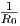
= , then a proper epidemic will
never break out.
- If the initial susceptible population is non-zero, in the end (at
equilibrium) there will always be some susceptible population.
- When there is an epidemic, it will eventually end in the equilibrium
point with 0 infected population, how fast it reaches the equilibrium
depends upon the recovery rate (the higher α is the quicker the infection
removal).
- The time to reach the equilibrium can be computed using Euler method,
it depends on the parameters α (the higher the quicker) and β (the higher
the quicker) and the initial infected populated size I(0) (the higher the
quicker).
Contents
List of variables
|
|
|
| Variable | Description | Unit |
|
|
|
| t | time | day |
|
|
|
| S(t) | the size of susceptible population at time t, | person |
| | who are not infected but could become infected | |
|
|
|
| I(t) | the size of infected population at time t, individuals | person |
| | that have / can transmit flu to susceptible population | |
|
|
|
| R(t) | the size of removed population at time t, individuals | person |
| | that can not become infected / transmit flu to others | |
|
|
|
| α | the recovery rate, the rate with which an infected | [day]-1 |
| | recovers and moves into the removed state | |
|
|
|
| β | the attack rate, fraction of susceptible-infected | [person]-1[day]-1 |
| | contacts results in a new infection, i.e., proportion | |
| | of disease-spreading contacts made by each infected | |
| | individual per day | |
|
|
|
| R0 | basic reproduction number=, expected number | [person]-1 |
| | of new infections from a single infection in a population | |
|
|
|
| |
Chapter 1
Introduction
In 2010, the pandemic influenza A (H1N1) had an outbreak in Kolkata, West
Bengal, India. An increased number of cases with influenza like illness (ILI) were
reported in Greater Kolkata Metropolitan Area (GKMA) during July and August
2010, as stated in [3]. The main motivation for this research project will be to
understand the spread of the pandemic, compute the equilibrium points and find
the impact of the initial values of the infected rate and the attack / recovery rate
parameters on the spread of the epidemic, using simulations using the basic
epidemic SIR model.
Euler method will be primarily used to solve the system of differential equations for
SIR model and compute the equilibrium points. First a few simplified special cases
will be considered and both analytic and numerical methods (with Euler method)
will be used to compute the equilibrium points. Then the solution for the generic
model will be found.
As described in [6], the SIR model can also be effectively used (in a broader
context) to model the propagation of computer virus in computer networks,
particularly for the networks with Erdos-Renyi type random graph topology.
The chapter 1 describes all the methods used along with the results obtained for
simplified special cases along with the generic model. Different combinations of the
parameter values (and the initial values of the variables) will be used to understand
the impact of the change of the values in parameters / initial values of the
variables. The conclusions chapter discusses the conclusions obtained from the
simulations. And finally the bibliography contains the references for the external
sources, followed by appendix, that contains derivation of long analytic solutions /
long tables.
Chapter 2
SIR Epidemic Model
The SIR model is an epidemiological model that computes the theoretical number
of people infected with a contagious illness in a closed population over time. One
of the basic one strain SIR models is Kermack-McKendrick Model. The
Kermack-McKendrick Model is used to explain the rapid rise and fall in the number
of infective patients observed in epidemics.
It assumes that the population size is fixed (i.e., no births, no deaths due to
disease nor by natural causes), incubation period of the infectious agent is
instantaneous, and duration of infectivity is the same as the length of the disease. It
also assumes a completely homogeneous population with no age, spatial, or social
structure.
The following figure 2.1 shows an electron microscope image of the re-assorted
H1N1 influenza virus photographed at the CDC Influenza Laboratory. The viruses
are 80 - 120 nm in diameter [1].
2.1 Basic Mathematical Model
The starting model for an epidemic is the so-called SIR model, where S
stands for susceptible population, the people that can be infected. I is
the already infected population, the people that are contagious, and R
stands for the recovered population, people who are not contagious any
more.
2.1.1 Differential Equations
The SIR model can be defined using the following ordinary differential equations
2.1:
- The terms
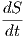
,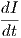
,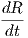
in the differential equations indicate the rate of
change of the susceptible population size, the infected population size
and the recovered population size, respectively.
- The term β and α indicate the attack rate (number of susceptible persons
get infected per day) and the recovery rate of the flu (inverse of the
number of days a person remains infected), respectively.
- High value of α means a person will be infected by the flu for less number
of days and high value of β means that the epidemic will spread quickly.
- Also, as can be seen from below, from the differential equations it can
be shown that the population (S + I + R) is assumed to be constant.
2.1.2 Collected data, units and values for the constants
- As can be seen from the following figure 2.2, the focus of this analysis
will be limited to the population in Kolkata Metropolitan Corporation
(KMC, XII) area where the population can be assumed to be ≈ 4.5
million or 4500 thousands, as per [7].
- Units
- All population (S,I,R) units will be in thousands persons (so that
total population N = 4500).
- As can be derived from the differential equations 2.1, the unit of β
will be in 10-6 [persons]-1[day]-1 (β = 25 will mean 25 persons in
a million gets infected by susceptible-infected contact per infected
persoon per day).
- Similarly, the units of α will be in 10-3 / day (α = 167 will mean
167 × 10-3 /day gets recovered from the flu per day).
- The attack rate is 20-29/100000 and the number of days infected (i.e. the
inverse of recovery rate) = 5 - 7 days on average (with a few exceptions), as
per [3].
- Typical values for β and α can be assumed to be 25 /person / day and
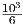
≈ 167 / day, respectively.
2.2 Simplified Model 1 (with α = 0)
- At first a simplified model is is created assuming that α = 0 (/ day) and
that R = 0, so once infected, a person stays contagious for ever. Because
S(t) + I(t) + R(t) = S(t) + I(t) = N is constant (since population size
N is fixed), S(t) can be eliminated and a single differential equation in
just I(t) is obtained as shown in the equation below 2.2.
- Also, let the (fixed) population size N = 4500 = S(0) + I(0), (in thousand
persons), initially the number of persons infected = I(0) = 1 (in
thousand persons) and susceptible S(0) = N - I(0) = 4499 (in thousand
persons), respectively. Let β = 25 × 10-6 /persons / day) to start
with.
2.2.1 Analytic Solution
- The analytic solution can be found by following the steps shown in the
Appendix A and the final solution is shown in the below equations 2.3:
- The following figure 2.3 shows the logistic (bounded) growth in I(t) (in
thousands persons) w.r.t. the time (in days) for different values of
attack rate β × 10-6 (/ person / day). As expected, the higher the
attack rate, the quicker all the persons in the population become
infected.
2.2.2 Finding the equilibrium points for I
- The equilibrium points are the points where the rate of change in I is zero,
the points that satisfy the following equation
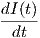 = 0 | |
|
| ⇒ βI(t)(N - I(t)) = 0 | |
|
| ⇒ I(t) = 0,N | | |
- Considering a small neighborhood of the equilibrium point at I = 0, it can be
seen from the figure 2.4 that whenever I > 0,
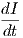
> 0, so I increases and goes
away from the equilibrium point.
- Hence, the equilibrium point at I = 0 is unstable.
- At I = N = 4500 (in thousand persons) it is a stable equilibrium. As can be
seen from the following figure 2.4, in a small neighborhood of the equilibrium
point at I = 4500, it always increases / decreases towards the equilibrium
point.
- In a small ϵ > 0 neighborhood at I = 4500 (in thousand persons),
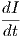
> 0, so I increases when I <= 4500 - ϵ.
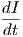
> 0, so I decreases when I >= 4500 + ϵ .
- The same can be observed from the direction fields from the figure
2.5.
- Hence, the equilibrium at I = 4500 is stable.
2.2.3 Numerical Solution with the Euler Method
- The algorithm (taken from the course slides) shown in the following
figure 2.6 will be used for numerical computation of the (equilibrium)
solution using Euler method.
- The algorithms and the simulations are implemented in python
matplotlib library (the source code can be found in Appendix C) and
some visualization results are implemented with R ggplot2 library
(the source code can be found in Appendix D).
- As can be seen from the figure 2.6, then the infection at the next timestep can
be (linearly) approximated (iteratively) by the summation of the
the infection current timestep with the product of the difference in
timestep and the derivative of the infection evaluated at the current
timestep.
2.2.3.1 Finding the right step size (with β = 25 × 10-6∕person∕day)
- In order to decide the best step size for the Euler method, first Euler
method is run with different step sizes as shown in the figure 2.7.
- As can be seen from the following table 2.1 and the figure 2.7, the largest
differences in the value of I (with two consecutive step sizes) occurs
around 78 days:
|
|
|
|
|
| Δt = 1 day | | Δt = 0.5 day | | Δt = 0.25 day |
|
|
|
|
|
| I(78)=2220.351 | | I(78)=2437.837 | | I(78)=2546.591 |
|
|
|
|
|
| | 217.487 | | 108.754 | |
|
|
|
|
|
| |
Table 2.1: Error in Euler method with different step sizes
- As can be seen from the table in the Appendix B, the first time when the
error becomes < 1 person (in thousands) is with the step size
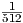
, hence this
step size will be used for the Euler method.
2.2.3.2 Computing the (stable) equilibrium point
- Now, this timestep will be used to solve the problem to find the
equilibrium time teq (in days). Find teq such that N -I(teq) < ϵ = 10-6,
the solution obtained is teq = 272.333984375 days ≈ 273 days.
- Now, from the analytic solution 2.3 and the following figure 2.8, it can
be verified that the teq solution that the Euler method obtained is pretty
accurate (to the ϵ tolerance).
2.2.3.3 Results with β = 29 × 10-6 / person / day, I(0) = 1 person
- Following the same iterations as above, the steepest error is obtained at
t = 67 days in this case, as shown in the figure 2.9.
- The first time when error becomes less than one person for t = 67 days
with Euler method is with step size
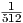
again.
- The solution obtained is teq = 234.76953125 days ≈ 235 days, so the
equilibrium (when all the population becomes infected) is obtained
earlier as expected, since the attack rate β is higher.
2.2.3.4 Results with β = 25 × 10-6 / person / day, with different initial values for
infected persons (I(0))
- Following the same iterations as above, the equilibrium point is
computed using the Euler method with different values of initial infected
population I(0), as shown in the figure 2.10.
- The solutions
obtained are teq = 272.33,258.02,251.85,248.23,245.66,245.66 days for
I(0) = 1,5,10,15,20 days, respectively. So the equilibrium is obtained
earlier when the initial infected population size is higher, as expected.
2.3 Simplified Model 2 (with β = 0)
- Next, yet another simplified model is considered by assuming that β = 0
and that α > 0, so the flu can no more infect anyone (susceptible, if
any, possibly because everyone got infected), an infected person recovers
from flu with rate α. This situation can be described again with a single
differential equation in just I(t) as shown in the equation below 2.4.
- Also, let the the entire population be infected, N = 4500 = I(0), (in thousand
persons), initially the number of persons susceptible = S(0) = 0, respectively.
Let α = 167 × 10-3 (/ day) to start with.
2.3.1 Analytic Solution
- The analytic solution can be found by following the steps shown in the
below equations 2.5:
- The following figure 2.11 shows the exponential decay in I(t) (in thousand
persons) w.r.t. the time (in days) for different values of recovery rate
α × 10-3 (/ day). As expected, the higher the recovery rate, the quicker all
the persons in the population get rid of the infection.
- Now, I(t) + R(t) = N (since S(t) = 0 forever, since no more infection) and
I(0) = N, combining with the above analytic solution I(t) = I(0).e-αt = N.e-αt,
the following equation is obtained:
- The following figure 2.12 shows the growth in R(t) (in thousand
persons) w.r.t. the time (in days) for different values of recovery
rate α × 10-3 (/ day). As expected, the higher the recovery rate,
the quicker all the persons in the population move to the removed
state.
2.3.2 Numerical Solution with the Euler Method
2.3.2.1 Solution with α = 167 × 10-3 / day
2.4 Generic Model (with α,β > 0)
First, the numeric solution will be attempted for the generic model (using Euler
method) and then some analytic insights will be derived for the geenric
model.
2.4.1 Numerical Solution with the Euler Method
- The following algorithm 2.14 shown in the next figure is going to be
used to obtain the solution using Euler method (the basic program for
Euler’s method, adapted to include three dependent variables and three
differential equations).
- As can be seen from the figure 2.14, first the vector
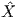
(0) is formed by
combining the three variables S,I,R at timestep 0. Then value of the vector
at the next timestep can be (linearly) approximated (iteratively) by the
(vector) summation of the vector value at the current timestep with the
product of the difference in timestep and the derivative of the vector
evaluated at the current timestep.
2.4.1.1 Equilibrium points
- At the equilibrium point,
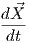
= 0 ⇒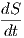
= 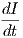
= 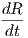
= 0 ⇒ I(t) = 0.
There will be no infected person at the equilibrium point (infection
should get removed).
- As can be seen from the following figure 2.15 also, I = 0 is an equilibrium
point, which is quite expected, since in the equilibrium all the infected
population will move to the removed state.
- Also, at every point the invariant S + I + R = N holds.
- In this particular case shown in figure 2.15, the susceptible population
S also becomes 0 at equilibrium (since all the population got infected
initially, all of them need to move to removed state) and R = N = 4500
(in thousand persons).
2.4.1.2 Results with Euler method
- As explained in the previous sections, the same iterative method is to
find the right stepsize for the Euler method. The minimum of the two
stepsizes determined is Δt =
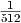
day and again this stepsize is going to
be used for the Euler method.
- The following figures show the solutions obtained with different values
of α,β with the initial infected population size I(0) = 1 (in thousand
persons). Higher values for the parameter β obtained from the literature
are used for simulation, since β = 25 × 10-6 /person /day is too small
(with the results not interesting) for the growth of the epidemic using
the Euler method (at least till Δt =
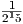
, after which the iterative Euler
method becomes very slow).
- As can be seen, from the figures 2.16, 2.17 and 2.19, at equilibrium, I
becomes zero.
- The solution (number of days to reach equilibrium) obtained at α =
167×10-3 /day and β = 25×10-5 /person /day is teq = 143.35546875 ≈
144 days with I(0) = 1 (in thousand persons), the corresponding figure
is figure 2.16.
- The solution (number of days to reach equilibrium) obtained at α =
167 × 10-3 /day and β = 5 × 10-5 /person /day is teq ≈ 542 days with
I(0) = 1 (in thousand persons), the corresponding figure is figure 2.17.
Hence, higher the β value, the equilibrium is reached much earlier.
- The solution obtained at α = 500 × 10-3 /day and β = 25 × 10-5
/person /day is teq ≈ 78 days with I(0) = 1 (in thousand persons),
the corresponding figure is figure 2.19. Hence, higher the α value, the
equilibrium is reached earlier.
- The solution obtained at α = 167×10-3 /day and β = 25×10-5 /person
/day is teq = 140 days with I(0) = 10. Hence, as expected, higher the
number of initial infected population size, quicker the equilibrium is
reached.
- At equilibrium, S does not necessarily become zero, since sometimes the
entire population may not get infected ever, as shown in the figure 2.17,
where at equilibrium the susceptible population is non-zero.
- As can be seen from the phase planes from following figure 2.21, at
equilibrium, the infected population becomes 0.
2.4.2 Analytic Solution and Insights
2.4.2.1 Basic Reproduction Number (R0)
The basic reproduction number (also called basic reproduction ratio) is defined
by R0 =
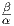
(unit is ∕day). As explained in [2], this ratio is derived as the expected
number of new infections (these new infections are sometimes called secondary
infections) from a single infection in a population where all subjects are
susceptible. How the dynamics of the system depends on R0 will be discussed
next.
2.4.2.2 The dynamics of the system as a function of R0
- By dividing the first equation by the third in 2.1, as done in [2], the
following equation is obtained:
- Now, at t →∞, the equilibrium must have been already reached and all
infections must have been removed, so that limt→∞I(t) = 0.
- Also, let R∞ = limt→∞R(t).
- Then from the above equation 2.8, R∞ = N - S(0).eR0
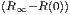
.
- As explained in [2], the above equation shows that at the end of an epidemic,
unless S(0) = 0, not all individuals of the population have recovered, so some
must remain susceptible.
- This means that the end of an epidemic is caused by the decline in the
number of infected individuals rather than an absolute lack of susceptible
subjects [2].
- The role of the basic reproduction number is extremely important, as
explained in [2]. From the differential equation, the following equation can be
obtained:
- S(t) >
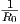
⇒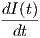
> 0 ⇒ there will be a proper epidemic outbreak with
an increase of the number of the infectious (which can reach a considerable
fraction of the population).
- S(t) <
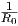
⇒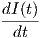
< 0 ⇒ independently from the initial size of the
susceptible population the disease can never cause a proper epidemic
outbreak.
- As can be seen from the following figures 2.21 and 2.22 (from the
simulation results obtained with Euler method), when S(0) >
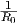
, there
is a peak in the infection curve, indicating a proper epidemic
outbreak.
- Also, from the figures 2.21 and 2.22, when S(0) >
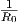
, the higher the the gap
between S(0) and 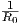
, the higher the peak is (the more people get infected)
and the quicker the peak is attained.
- Again, from the figure 2.22, when 4490 = S(0) <
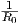
= 5000, it never causes a
proper epidemic outbreak .
- Again, by dividing the second equation by the first in 2.1, the following
equation is obtained:
 | (2.8) |
- As can be noticed from the above figure 2.23 that because the formulas differ
only by an additive constant, these curves are all vertical translations of each
other.
- The line I(t) = 0 consists of equilibrium points.
- Starting out at a point on one of these curves with I(t) > 0, as time goes on
one needs to travel along the curve to the left (because
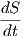
< 0), eventually
approaching at some positive value of S(t).
- This must happen since on any of these curves, as I(t) →∞, as S(t) → 0,
from equation 2.8.
- So the answer to question (2) is that the epidemic will end as with
approaching some positive value and thus there must always be some
susceptibles left over.
- As can be seen from the following figure 2.24 (from the simulation results
obtained with Euler method), when S(0) >
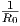
, lesser the the gap between
S(0) and 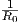
, the higher the population remains susceptible at equilibrium (or
at t →∞).
Chapter 3
Conclusions
In this report, the spread of the pandemic influenza A (H1N1) that had an
outbreak in Kolkata, West Bengal, India, 2010 was simulated using the basic
epidemic SIR model.Initially there will be a small number of infected persons in the
population, most of the population had susceptible persons (still not infected but
prone to be infected) and zero removed persons. Given the initial values of the
variables and the parameter (attack and recovery rates of the flu) values, the
following questions were attempted to be answered with the simulation /
analysis:
- Whether the number of infected persons increase substantially,
producing an epidemic, or the flue will fizzle out.
- Assuming there is an epidemic, how will it end? Will there still be any
susceptibles left when it is over?
- How long will the epidemic last?
The following conclusions are obtained after running the simulations with different
values of the parameters and the initial values of the variables:
- When the recovery rate α is ≈ 0 or very very low compared to the attack
rate β (so that R0 = >> 1) and I(0) > 1, the flu will turn out to be
an epidemic and the entire population will be infected first (the higher
β is the quicker the epidemic break out).
- To be more precise, when the initial susceptible population S(0) is
greater than the inverse of the basic reproduction number
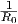
=  , a
proper epidemic will break out.
, a
proper epidemic will break out.
- When the initial susceptible population S(0) is less than the inverse of
the basic reproduction number
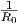
= , then a proper epidemic will
never break out.
- If the initial susceptible population is non-zero, in the end (at
equilibrium) there will always be some susceptible population.
- When there is an epidemic, it will eventually end in the equilibrium
point with 0 infected population, how fast it reaches the equilibrium
depends upon the recovery rate (the higher α is the quicker the infection
removal).
- The time to reach the equilibrium can be computed using Euler method,
it depends on the parameters α (the higher the quicker) and β (the higher
the quicker) and the initial infected populated size I(0) (the higher the
quicker).
- Scope of improvement: The SIR model could be extended to The
Classic Endemic Model [5] where the birth and the death rates are also
considered for the population (this will be particularly useful when a
disease takes a long time to reach the equilibrium state).
Bibliography
[1] Swine influenza, Wikipedia, the free encyclopedia,
https://en.wikipedia.org/wiki/Swine_influenza.
[2] Compartmental models in epidemiology, Wikipedia, the free
encyclopedia, https://en.wikipedia.org/wiki/Compartmental_models_in_epidemiology.
[3] An outbreak
of pandemic influenza A (H1N1) in Kolkata, West Bengal, India, 2010,
https://www.ncbi.nlm.nih.gov/pmc/articles/PMC3385238.
[4] A Computer Virus Propagation Model using Delay Differential
Equations With Probabilistic Contagion and Immunity, M. S. S. Khan,
http://airccse.org/journal/cnc/6514cnc08.pdf.
[5] The Mathematics of Infectious Diseases, Herbert W. Hethcote,
http://leonidzhukov.net/hse/2014/socialnetworks/papers/2000SiamRev.pdf.
[6] Electron microscope image of the re-assorted H1N1
influenza virus photographed at the CDC Influenza Laboratory,
https://www.cdc.gov/h1n1flu/images/B00528_H1N1_flu_blue_sml.jpg.
[7] Basic Statistics, Kolkata Municipal Corporation,
https://www.kmcgov.in/KMCPortal/jsp/BasicStatistics.jsp.
[8] DelftX: MathMod1x Mathematical Modelling Basics,
edX online course, week2 and week3 lecture videos,
https://courses.edx.org/courses/course-v1:DelftX+MathMod1x+2T2017.
Appendix A
Analytic derivation of the solution of the simplified SIR Model1
(α = 0)
Appendix B
Error table for Euler method
|
|
| Δt (in day) | Error=EΔt = y(t) - wΔt ≈ wΔt - w2Δt (in thousand persons) |
|
|
| 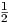 | 217.486594639 |
|
|
| 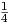 | 108.754179087 |
|
|
| | 54.0574495747 |
|
|
| 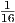 | 26.9092982076 |
|
|
| 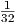 | 13.4199659856 |
|
|
| 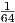 | 6.70071788053 |
|
|
| 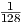 | 3.3479689886 |
|
|
| 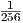 | 1.67337783755 |
|
|
| | 0.83653611108 |
|
|
|
|
| |
Appendix C
Python code for Euler method
1# Program : Euler's method for a system
2# Original Author : MOOC team Mathematical Modelling Basics
3# Modified by : Sandipan Dey
4# Created : June, 2017
5
6import numpy as np
7import matplotlib.pyplot as plt
8
9print("Solution for dS(t)/dt = -beta.S(t)I(t), dI(t)/dt = beta.S(t)I(t) - alpha.t, dR(t)/dt = alpha.I(t)")
10
11# Initializations
12
13Dt = 1./2**9 #0.1 # timestep Delta t
14I_init = 1 #10 # initial population of I
15S_init = 4499 #**4490 # initial population of S
16R_init = 0 # initial population of R
17t_init = 0 # initial time
18t_end = 200 #500 #30 #5 # stopping time
19
20n_steps = int(round((t_end-t_init)/Dt)) # total number of timesteps
21
22X = np.zeros(3) # create space for current X=[I,S,R]^T
23dXdt = np.zeros(3) # create space for current derivative
24t_arr = np.zeros(n_steps + 1) # create a storage array for t
25X_arr = np.zeros((3,n_steps+1))# create a storage array for X=[I,S,R]^T
26t_arr[0] = t_init # add the initial t to storage array
27X_arr[0,0] = I_init # add the initial I to storage array
28X_arr[1,0] = S_init # add the initial S to storage array
29X_arr[2,0] = R_init # add the initial R to storage array
30
31beta = 25 * 10**(-5) #5 * 10**(-5) #50 * 10**(-6) # 0.001
32alpha = 167 * 10**(-3) #500 * 10**(-3) # 0.05
33
34# Euler's method
35
36for i in range (1, n_steps + 1):
37 t = t_arr[i-1] # load the time
38 I = X_arr[0,i-1] # load the value of I
39 S = X_arr[1,i-1] # load the value of S
40 R = X_arr[2,i-1] # load the value of R
41 print I, S, R
42 X[0] = I # fill current state vector X=[I,S,R]^T
43 X[1] = S
44 X[2] = R
45 dIdt = beta*S*I - alpha*I # calculate the derivative dI/dt
46 dSdt = -beta*S*I # calculate the derivative dS/dt
47 dRdt = alpha*I # calculate the derivative dR/dt
48 dXdt[0] = dIdt # fill derivative vector dX/dt
49 dXdt[1] = dSdt
50 dXdt[2] = dRdt
51 Xnew = X + Dt*dXdt # calculate X on next time step
52 X_arr[:,i] = Xnew # store Xnew
53 t_arr[i] = t + Dt # store new t-value
54 print t, Xnew
55
56tolerance = 1e-6
57indices = np.where(abs(X_arr[0,:]-0)<tolerance)
58#print(indices[0][0])
59print(t_arr[indices[0][0]])
60
61# Plot the results
62
63fig = plt.figure()
64plt.plot(t_arr, X_arr[0,:], linewidth = 4, label="I(t)") # plot I vs. time
65plt.plot(t_arr, X_arr[1,:], linewidth = 4, label="S(t)") # plot S vs. time
66plt.plot(t_arr, X_arr[2,:], linewidth = 4, label="R(t)") # plot R vs. time
67
68plt.title(r'dS(t)/dt = -$\beta$ S(t)I(t), dI(t)/dt = $\beta$ S(t)I(t) - $\alpha$ t, dR(t)/dt = $\alpha$ I(t), $\beta=$' + str(beta) + r'\alpha=$' + str(alpha), fontsize = 10) # set title
69plt.xlabel('t (in days)', fontsize = 20) # name of horizontal axis
70plt.ylabel('S(t), I(t) and R(t)', fontsize = 20) # name of vertical axis
71
72plt.xticks(fontsize = 10) # adjust the fontsize
73plt.yticks(fontsize = 10) # adjust the fontsize
74plt.axis([0, 100, 0, 4500]) # set the range of the axes
75plt.legend(fontsize=10) # show the legend
76plt.show() # necessary for some platforms
77
78# save the figure as .jpg (other formats: png, pdf, svg, (ps, eps))
79fig.savefig('SIR_epidemic.jpg', dpi=fig.dpi, bbox_inches = "tight")
80
Appendix D
R code for Euler method and Visualization
## Program: Euler’s method for a system
## Author: Sandipan Dey
## Created: June, 2017
F <- function(X) {
return (data.frame(S=-beta*X$S*X$I,
I=beta*X$S*X$I-alpha*X$I,
R=alpha*X$I))
}
beta <- 25*10^(-5)
alpha <- 167*10^(-3) # 0.05
t <- 0
del_t <- 1/2^9 #8 #1
X_t <- data.frame(S=4499, I=1, R=0)
X <- X_t
print(cbind(t, X_t))
while (t <= 50) {
X_t <- X_t + del_t * F(X_t)
t <- t + del_t
X <- rbind(X, X_t)
#print(cbind(t, X_t))
}
X$t <- 0:(nrow(X)-1)
library(ggplot2)
library(gridExtra)
grid.arrange(
ggplot(X, aes(S, I)) +
geom_point(col='blue') +
geom_line(arrow = arrow(length = unit(0.5, "cm"))) +
theme_bw(),
ggplot(X, aes(S, R)) +
geom_point(col='blue') +
geom_line(arrow = arrow(length = unit(0.5, "cm"))) +
theme_bw(),
ggplot(X, aes(R, I)) +
geom_point(col='blue') +
geom_line(arrow = arrow(length = unit(0.5, "cm"))) +
theme_bw(),
ncol = 2)
library(tidyr)
X$t <- X$t / 2^8
X %>% gather(variable, value, -t) %>%
ggplot(aes(t, value, col=variable)) +
geom_point() + geom_line() +
facet_wrap(~variable, scales = 'free_y', ncol = 1)
library(scatterplot3d)
scatterplot3d(X$S, X$I, X$R, pch = 19,
color='blue', xlab='S', ylab='I', zlab='R')


![dI(t) = βI (t)(N - I(t))
dt
I(∫t)----dI(t)---- ∫t
⇒ I(t)(N - I (t)) = β dt
I(0) 0
( )
-1 I(∫t)dI-(t) I∫(t)--dI(t)- ∫t
⇒ N I(t) + N - I(t) = β 0 dt
I(0) I(0)
I(t) I(t)
⇒ [ln|I(t)|]I(0) + [- ln|N - I(t)|]I(0) = βN [t]t0
-I(t)-- (-N- )
⇒ lnN -I(t) + ln I(0) - 1 = βN t,0 ≤ I(t) ≤ N
( )
⇒ ln--I(t)- = βN t- C,C = ln -N- - 1 (let)
N -I(t) I(0)
⇒ I (t) = ----N------
1+ eC- βNt](FinalReport51x.png)
{kind=link}